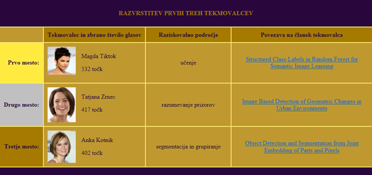
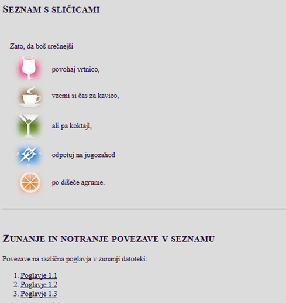
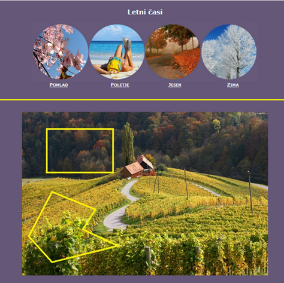
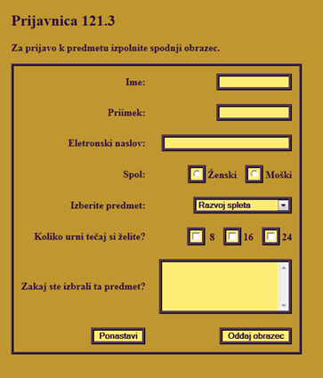
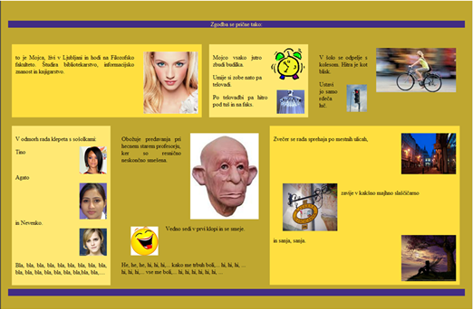
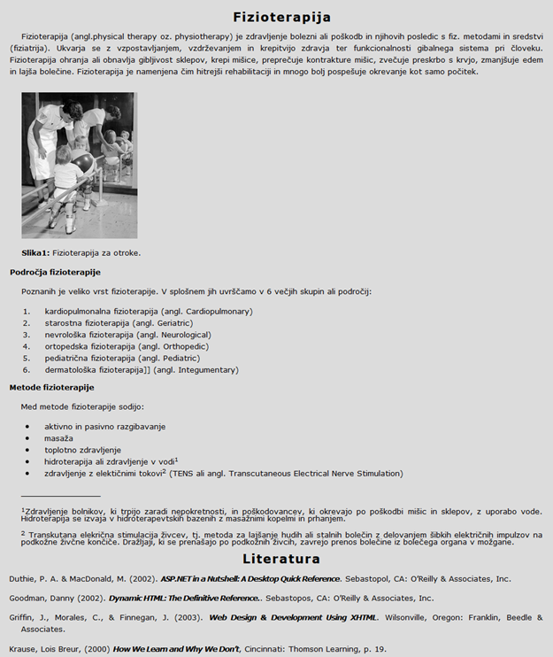

Seminarska naloga zahteva, da pripravite več spletnih strani. Vstopna spletna stran ima v glavi sliko. Sledi navigacijska prečka s povezavami TABELA, SEZNAM, ZEMLJEVID, OBRAZEC, STORYBOARD, ČLANEK, DOMAČE NALOGE. Enaka navigacijska prečka naj se nahaja tudi na dnu spletne strani. Ob premiku miškinega kazalca na povezavo naj ta zamenja barvo. Ob levi strani naj se nahaja meni s povezavami do istih spletnih strani. Ta meni ima fiksno pozicijo glede na okno spletnega brskalnika (navidezno bo potoval s tekstom, ko se bomo pomikali navzdol po spletni strani). Ob premiku miškinega kazalca na te povezave naj se spremeni barva teksta in ozadja. Tekst na spletni strani so navodila, ki se nahajajo v tem dokumentu. Tekst naj bo obojestransko poravnan. Na vstopni spletni strani naj bodo ostale spletne strani, z izjemo spletne strani s povezavami na domače naloge, prikazane kot slike, ki plavajo desnood teksta. Tekst je navodilo, kako naj bo spletna stran oblikovana. Vse spletne strani, ki jih dosežemo preko povezav v navigacijski prečki naj imajo v levem spodnjem kotu povezavo na vstopno »domačo stran«.
 Povezava TABELA naj nas poveže s spletno stranjo, ki vsebuje tabelo. Tabela je sestavljena iz treh delov. Glave, telesa in noge. Vključuje slike in povezave na pdf datoteke. Glej sliko, ki kaže tabelo. Glava in noga tabele sta na sliki v temno viola barvi. Vi izberite barve v skladu z vašo izbrano barvno shemo.
 Povezava SEZNAM nas poveže s spletno stranjo na kateri sta dva seznama. V prvem seznamu so elementi seznama označeni z majhnimi sličicami, kot je razvidno s slike, ki prikazuje seznama.
Drugi seznam vsebuje tri povezave. Povezava Poglavje 1.1 naj nas poveže z zunanjim dokumentom in naj se nahaja na notranji lokaciji, ki označuje Poglavja 1.1, Povezava Poglavje 1.2 naj nas poveže z istim zunanjim dokumentom in naj se nahaja na notranji lokaciji, ki označuje Poglavja 1.2, podobno za povezavo Poglavje 1.3.
 Povezava ZEMLJEVID nas poveže s spletno stranjo z dvema slikama, kjer je vsaka definirana kot mapa. V prvi so 4 področja v obliki kroga, vsak krog nas poveže z ustrezno pdf datoteko.
Na drugi sliki sta področji, ki definirata mapo v obliki pravokotnika in poligona. Lika, ki določata področje povezave, naj bosta na sliki narisana, da bo možno preveriti, ali mapa pravilno deluje! Povezavi naj nas vodita do poljubnih spletnih strani.
 Povezava OBRAZEC naj nas vodi do spletne strani z obrazcem. Obrazec je narejen s pomočjo tabele z dvema stolpcema. Vključuje Textbox (3x), Radio Button (2x), Drop-Down List, Checkbox, Textarea, Reset in Submit Button (Glej sliko).
 Povezava STORYBOARD nas vodi do spletne strani, ki je zgrajen iz večjega števila škatel v različnih barvah. Sestavite zgodbo. V škatlah naj bo več slik, plavajo naj levo in desno od teksta. Barve naj bodo usklajene.
 Povezava ČLANEK nas vodi do spletne strani s člankom. Tekst v članku je podan na koncu navodil.
Povezava DOMAČE NALOGE nas vodi do seznama povezav, ki nas pripeljejo do opravljenih domačih nalog. Seznam strukturirajte po temah.